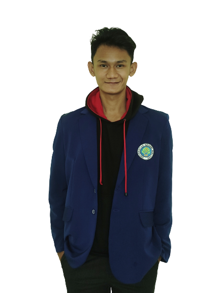
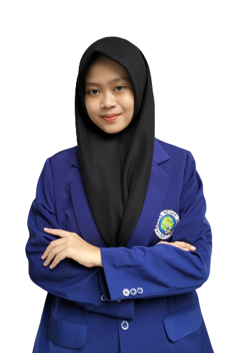
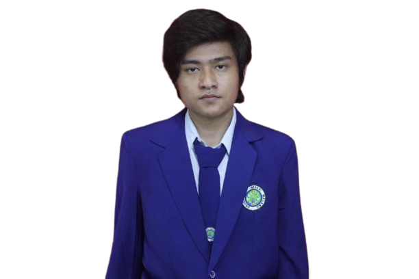
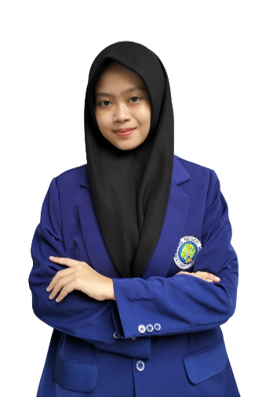
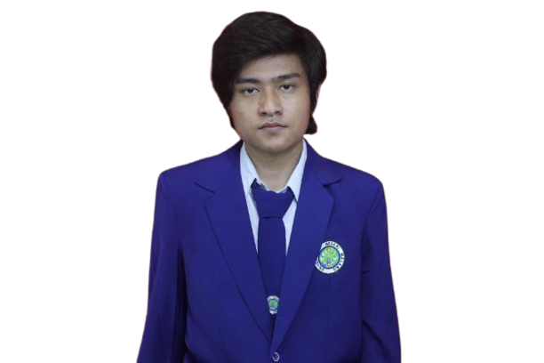

About Us



Adam Wicaksono
"Kegagalan bukanlah akhir, itu hanyalah proses untuk memulai ulang tetapi dengan cara yang lebih cerdas."

Nabila Najwa Annas
"Tidak ada jalan pintas menuju sukses. Itu adalah kombinasi dari persiapan, kerja keras, dan belajar dari kegagalan."

Rino Dharmawan Fikri
"Kehidupan adalah perjalanan yang tak terbatas, terbentang di antara dua titik waktu yang tak terhingga. Selama kita mengalami momen-momen yang berharga, memberikan sentuhan kecil atau besar kepada orang-orang di sekitar kita, dan meninggalkan jejak yang positif di dunia ini, maka arti sejati dari kehidupan kita pun terwujud. Dengan setiap tindakan kecil yang kita lakukan, kita secara tak sadar membangun narasi kehidupan kita sendiri, merangkai cerita yang akan dikenang oleh generasi-generasi berikutnya."